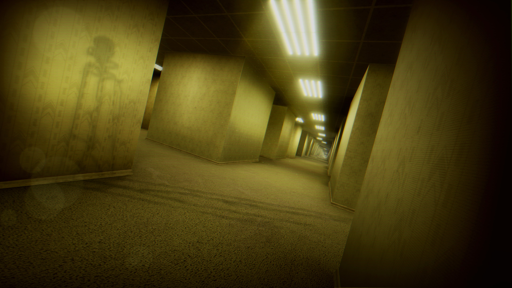

Reseñas
En esta página nos dedicaremos a reseñar diferentes videojuegos de terror que vayamos probando.
Outlast

Outlast es un juego de terror en el que te pondrás en la piel de un reportero que tiene que entrar en un manicomio. Durante la aventura, irás explorando el lugar descubriendo los experimentos que hicieron con los pacientes, a la vez que huyes de ellos. Cuenta con 3 entregas y un DLC, entre estos, uno de ellos es multijugador.
Sin duda, es un videojuego totalmente recomendable, con una atmósfera llena de terror, imprescindible si quieres entrar en el mundo de los videojuegos de terror.
Escape The Backrooms

Escape The Backrooms es un juego de terror compatible con multijugador con amigos. En este juego, tendrás que adentrarte en diferentes salas prácticamente infinitas mientras evitas las entidades y anomalías que se encuentran en el entorno para buscar la salida. Cada mapa se genera proceduralmente, por lo que cada aventura será única.
Si buscas pasar un tiempo con amigos en los que busquéis pasar miedo y asustaros, este juego es clave para poder pasar el rato gritando y entre risas mientras sientes la sensación de terror.